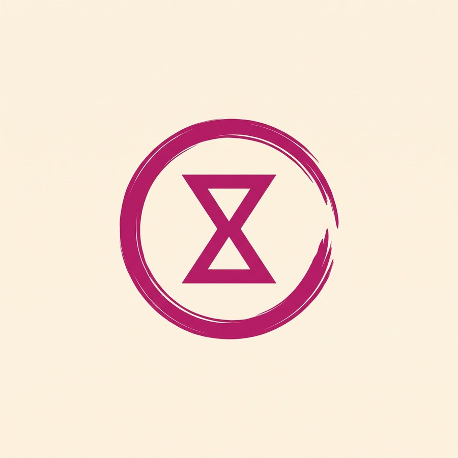
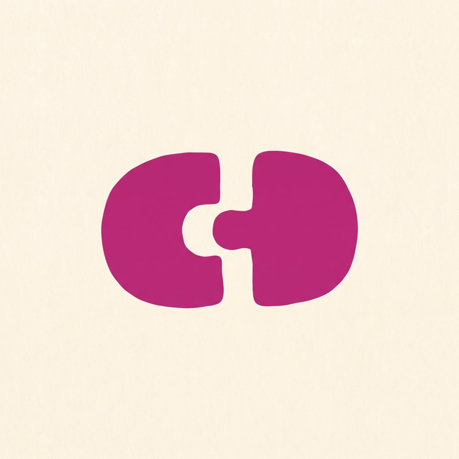
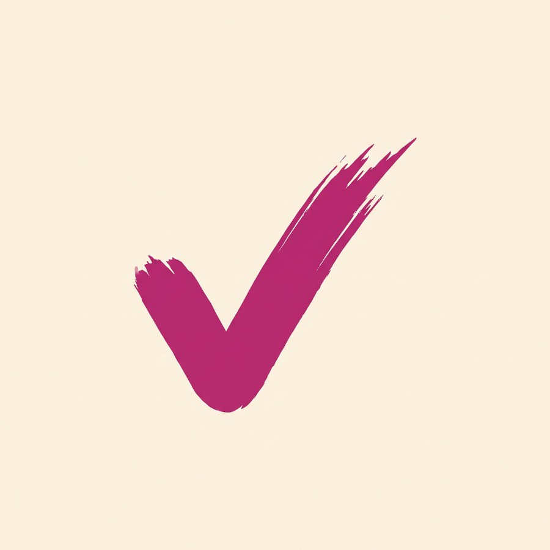
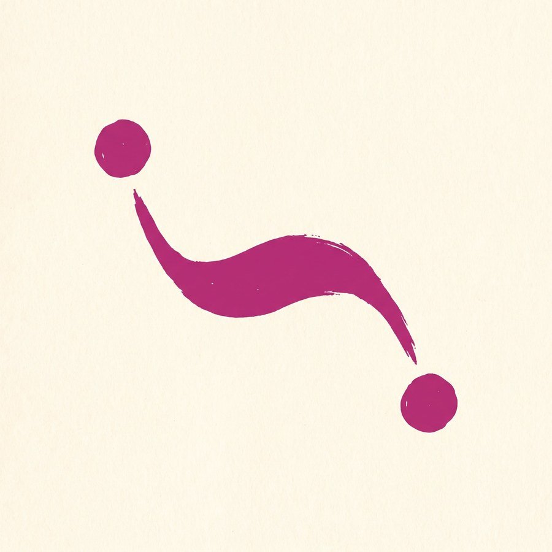

01
Terza serie: segni che dicono il servizio
Ognuno di questi parte da un significato preciso del prodotto, non da un elemento del paesaggio. Restano disegnati a mano — il calore non si perde — ma adesso vogliono dire qualcosa.
P · Il cerchio che si chiude
La mia sceltaDice: mancava un pezzo, il pezzo arriva, il cerchio si completa.
- È letteralmente il vostro servizio: il buco in squadra che viene riempito
- Tracciato a pennello, caldo, nessun compasso
- Semplicissimo: regge la riduzione meglio di ogni altro disegnato
- Il pezzo staccato può diventare un elemento grafico ricorrente nel sito

U · Sigillo e clessidra
Alternativa forteDice: garantiamo noi, e il tempo stringe.
- Unisce la mano (il cerchio tracciato) e la precisione (il simbolo dentro)
- Molto più pulito del timbro sbavato: funziona anche in piccolo
- Resta un sigillo, quindi resta il badge di certificazione
- La clessidra è anche il simbolo dell'attesa: da maneggiare con cura

Q · L'incastro
Da valutareDice: due parti che combaciano esattamente.
- Il concetto di match è immediato, non serve spiegarlo
- Il tassello di puzzle è uno dei simboli più abusati nel settore lavoro
- Formato orizzontale, scomodo dentro un badge quadrato

T · La spunta
Da valutareDice: presente, verificato, confermato.
- Il gesto di segnare "c'è" su una lista: esattamente il check-in
- Leggibilissima anche a 16px
- La spunta è un simbolo generico: la usano già in mille

S · La connessione
Da valutareDice: due parti messe in contatto.
- Gesto elegante, molto pulito
- Senza spiegazione sembra una virgola o un girino
R · Il posto vuoto
ScartataDice: nella squadra manca qualcuno che sta arrivando.
- Il concetto è il più chiaro di tutti
- Quattro figure sono troppe per un marchio: sotto i 64px è una staccionata